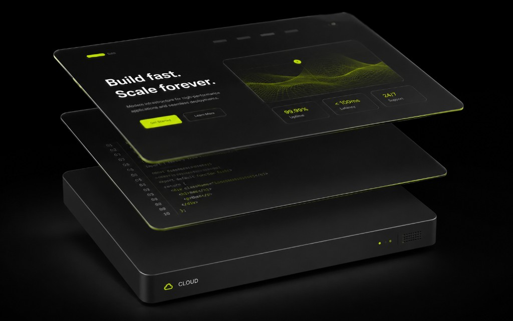

Стек должен служить заявкам, а не резюме разработчика
Выбор стека для лендинга часто превращается в спор про фреймворки. Для бизнеса в Узбекистане важнее другое: срок, бюджет, кто будет править текст, скорость сайта и как заявки попадут в Telegram или CRM. Красивый стек без рабочей формы — плохой стек.
Ниже — практичное сравнение без священных войн: статика, CMS и конструктор. Мы в getsite выбираем минимально достаточное решение под задачу, а не «на вырост до космоса».

Статика / hand-coded лендинг
Плюсы: скорость, контроль вёрстки, предсказуемая безопасность, отличный SEO-фундамент при аккуратной разметке. Минусы: контент обычно через разработчика, правки требуют процесса. Подходит, когда дизайн нестандартный, важны анимации и перформанс, а обновления редкие.
- Хорошо: маркетинговые лендинги, кампании, имиджевые страницы.
- Плохо: ежедневные правки цен нетехническим менеджером без пайплайна.
CMS
Плюсы: редактирование текстов и блоков без деплоя, роли, структура страниц. Минусы: тяжелее, дороже в поддержке, легче «раздуть» плагинами и убить скорость. Берите CMS, если контент живой и правки частые — но держите дисциплину: минимум плагинов, кэш, сжатие картинок.
Конструктор
Плюсы: быстрый старт, низкий порог. Минусы: ограничения дизайна, сложнее кастомные интеграции, иногда хуже контроль SEO и скорости. Нормальный выбор для проверки оффера на 2–4 недели, если команда готова мириться с рамками. Для бренда с особым UI часто быстрее сразу сделать чистый лендинг.
- Определите частоту правок контента и кто их делает.
- Зафиксируйте интеграции: форма → Telegram-бот/CRM, аналитика, оплата.
- Оцените требования к скорости и уникальному дизайну.
- Выберите самый простой слой, который закрывает пункты 1–3.
Что проверить до договора
Кто хостит, кто владеет доменом и доступом, как выглядит процесс правок, есть ли ответственность за форму и аналитику после запуска. В Ташкенте много проектов «сделали и пропали» — стек не спасёт, если нет поддержки. Лучше скучный надёжный вариант с понятным SLA, чем модный фреймворк без владельца.
Когда не надо усложнять
Не тащите микросервисы, headless ради headless и три окружения на одноэкранный лендинг. Не выбирайте стек «как у крупного маркетплейса», если вам нужна страница услуги и заявки. Сложность должна покупать бизнес-ценность, а не чувство прогресса у разработчиков.
Итог: стек — это инфраструктура продаж. Сначала сценарий заявки и бриф, потом технологии.
Команда, хостинг и долгая жизнь проекта
Стек живёт столько, сколько живёт команда, которая его понимает. Если единственный разработчик уехал, а сайт на редком фреймворке без документации — вы заложник. Для лендингов бизнеса в Узбекистане чаще выигрывает скучная предсказуемость: понятный HTML/CSS/JS или умеренная CMS с официальными обновлениями.
Хостинг выбирайте рядом с аудиторией и с понятным SLA. Дешёвый shared, который падает в час пик рекламы, съест экономию на стеке. SSL, бэкапы, доступ по SSH/панели — базовые вопросы до договора, не после инцидента.
Спросите про деплой: как выкатываются правки, есть ли превью, кто катает в прод. Если «правим прямо на живом FTP» — риск высокий для всего, что сложнее визитки. Формы и ключи аналитики особенно любят ломаться при ручных правках.
Интеграции заранее: Telegram-бот, CRM, платежи. Конструктор может закрыть заявку почтой, но споткнуться на кастомном сценарии. Статика легко шлёт в бот, но контент-менеджеру неудобно. CMS гибче, пока не обрастёт плагинами. Прикладывайте конкретный сценарий заявки к выбору, а не абстрактный «нужна гибкость».
В конце — тест на честность коммерческого предложения: если вам продают enterprise-стек на трёхнедельный лендинг, спросите, какую боль это снимает в первую неделю после запуска. Если ответа нет — упрощайте. Скорость сайта, SEO-база и рабочая форма важнее модного лейбла в резюме подрядчика.
Миграции и «вырастет потом»
«Сделаем на конструкторе, потом перенесём» звучит безопасно, но перенос почти всегда дороже ожидания: URL, SEO, формы, пиксели, контент. Если рост вероятен за квартал, заложите стек с запасом или сразу чистый лендинг. Если гипотеза на две недели — конструктор ок, только не обещайте себе лёгкий перенос.
То же с CMS: иногда достаточно git-based контента или ручных деплоев на старте. Админка — плата сложностью. Спрашивайте, кто будет ей пользоваться через месяц. Если «скорее всего никто» — не платите.
Безопасность: обновления, доступ админов, защита форм от спама. Спам-заявки засоряют CRM и выжигают менеджеров. Капча или honeypot, rate limit — маленькие решения с большим эффектом. Их проще заложить сразу, чем объяснять директору, почему в канале 200 пустых лидов.
Итоговое правило getsite: технология обслуживает скорость вывода на рынок и надёжность заявок. Всё, что этому мешает без явной выгоды — подозреваемый номер один на вылет из сметы.
Практичный сценарий выбора за час
Соберите требования: частота правок, интеграции, срок, бюджет, кто владеет контентом. Вычеркните стеки, которые не закрывают обязательные интеграции с Telegram или CRM. Оставьте два финалиста максимум.
Сделайте крошечный spike: отправка тестовой заявки и деплой на превью. Что уперлось — то и риск проекта. Лучше узнать про ограничение конструктора сейчас, чем на неделе запуска рекламы в Ташкенте.
Оцените поддержку: кто поднимает ночью, если форма упала. Стек без владельца — задолженность. Для бизнеса в Узбекистане простой стек с понятным подрядчиком часто выгоднее модного без сопровождения.
Зафиксируйте выбор и причины в однаабзацном ADR. Через полгода скажете себе спасибо, когда захочется «всё переписать» без повода.
Чеклист перед подписанием сметы на стек
Есть ли понятный деплой и превью? Есть ли план бэкапов? Как обновляются зависимости? Кто чинит форму? Как кэшируются ассеты и не ломают ли они обновление JS? Закрыты ли требования по скорости сайта и базовому SEO?
Если на половину вопросов молчание — заложите риск в бюджет или смените подход. Стек без эксплуатационной модели дорожает каждый месяц. Для компаний в Узбекистане это особенно заметно, когда «сделали и пропали».
Выберите простой путь, который команда реально сопровождает. Запишите решение. Через спринт после запуска проведите ретро: мешал ли стек, помогал ли. Так выбор технологий становится управляемым, а не религиозным.
Короткий вывод: выбирайте стек от сценария заявок, частоты правок и реальной поддержки, а не от моды. Если сомневаетесь между двумя вариантами, возьмите тот, который быстрее выводит рабочий лендинг с аналитикой и Telegram-уведомлением. Сложность можно купить позже, когда данные подтвердят рост. В Ташкенте выигрывает предсказуемый запуск, а не идеальная архитектура на слайде.